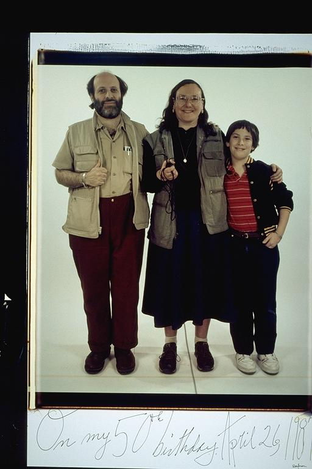

Pals: Boys Who Grew Up Together
elsadorfman.com/pals
Eugene: The Silverglates/Dorfmans:
HAS, EDS, and IDS have been my family -- part of my extended family since 1983. Elsa and Harvey have been excellent role models, each excelling in their professions and their commitment to raising Isaac (and indirectly, me) correctly. Elsa's nagging and protective nature has taught me countless lessons regarding finances and responsibility, among other things. Harvey's life story is a testimony to overcoming and succeeding, and maintaining a genuine commitment to service and community throughout.
Aldo: Isaac has a good family whom I've known for most of my life. The reason I say he has a good family is that both of his parents are hard-working, and if you know Isaac, then you know it has rubbed off. Isaac and I will always admire each other for different reasons. I'll always admire his work ethic which I'm sure he's learned from his parents. What he'd admire about me, I just couldn't tell you.

elsad@comcast.net